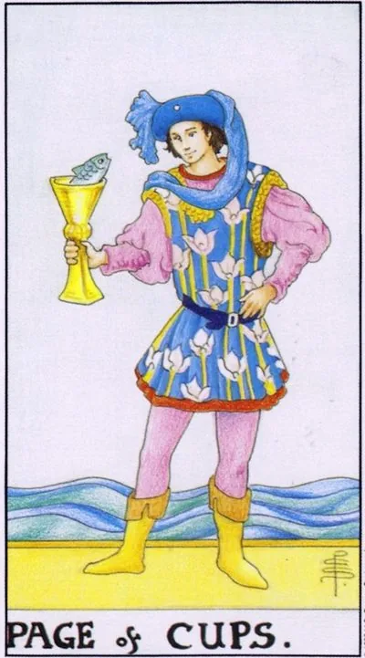

Minor Arcana · Cups
XIPage of Cups
The fish jumps out of the bowl: unexpected good news, a creative bell, permission to be sincere.
Archetype and core meaning
The young man looks at the bowl from which the fish jumps, and he doesn't shrug off the miracle. The only character in Waite's deck who takes the impossible seriously. Page is the messenger of the unconscious: ideas come suddenly, feelings are announced without a schedule, and news is used to delight.
The card means a message of emotional nature: recognition, invitation, news of addition, touching little thing that makes the day. The second facet is the inner child: the ability to wonder and create without looking back "how is it right." Page teaches you to trust the first impulse of the heart: the unexpected and slightly shy often turns out to be the real thing.
Daily life
Nice surprises: a package without waiting, a message from someone you haven't heard of, a childish drawing in your honor, a time of light creativity -- making something with kids, keeping a diary, singing louder than usual, allow yourself one "stupidity" that adults don't have.
Work and career
A fresh idea -- maybe a little wild, but yours: sketch it out without criticizing it on the fly; it's good to start learning, especially creatively, to ask for mentoring, to take the initiative of "what if." Young colleagues will bring unexpectedly valuable eyes; don't shy away from the proposals submitted.
Relationships
A new feeling dawns: a timid message, an awkward date, a sympathy that is not talked about yet. There may be good news -- a friend's engagement, a pregnancy, a confession. Param Page advises you to bring back the game: notes, gifts for no reason, joint stupidities. Sincerity disarms more than strategies.
Health
The emotional background is light, like a child after a walk: lightness, good appetite, sound sleep. The psyche asks for games and water — pool, watercolor, sand castles. The card is favorable for conception and communication with children, which cures nerves itself; just do not overfeed yourself with impressions.
Spiritual meaning
The fish in the bowl is a classic sign of message from the deep: intuition speaks in images, and Page can hear; the card is used to develop clairvoyance, work with dreams, and connect with the inner child; spiritual growth begins not with discipline, but with trusting the first quiet clue.
The cup is overturned from the inside: whims instead of feelings, a broken dream, a creative tap is blocked by resentment.
Archetype and core meaning
The flipped Page believes in miracles, but demands them immediately and necessarily for himself. The fish has turned from a bowl into a shelf trophy. It's emotional infantilism: the feelings are real, but expressed in resentment and silent "guess for yourself" war; only the childish role remains strong.
Traditionally, there's a cancelled good news, a broken romantic hope, a creative blockage. Sometimes a card describes a moody nature nearby, exhausting with its changeability. It asks, how long are you willing to wait for someone to grow up, and don't you expect them to?
Daily life
The day is a mess: the promised is delayed, the mood jumps from trifles, the loved ones are annoyed with one look, check if the inner child is literally hungry: lack of sleep and missed lunch turn adults into moody children, you need honest rest, not “rest” on the phone.
Work and career
Immature is in the little things: deadlines float, feedback is perceived as an insult, an interesting task is thrown in the middle, creatives are calm — ideas are there, hands are not reached. It is treated with small daily: fifteen minutes of work is more important than the heroic “start Monday”.
Relationships
The eternal teenager is in the mirror or next to you, the partner sulking instead of talking, demanding proof, resenting the truth. Be careful with the charming "artist with a vulnerable soul" - he needs a mother, not a companion. If the resentment lives in you, it's time to grow up: self-pity has already paid the bills.
Health
The body is affected by unstable emotions: appetite swirls between refusing to eat and eating, superficial sleep, energy jumps, exhausting the nervous system, and regimen helps as a form of care, not punishment: eating by the clock, screens away an hour before bedtime, children predictability of adults.
Spiritual meaning
The blocked channel of the inner child: creativity and intuition feed from the same source, and resentment overlaps both: practices are letters to your childhood self, a return to an abandoned passion without a purpose, working with the shadow of capriciousness. When angry at someone else's immaturity, ask where you never recognized yours.
🌿 How the school reads this rank
The main idea
Emotional dependence: the mood of others easily becomes your own.
How it manifests
In work, you're a soft learner, a creative person who cares about the process, in relationships, you're in love, you're in a subtle sense of your partner, in art and in the spiritual realm, you're emotionally aware and intuitively aware.
The shadow side
Emotions are out of place: a person cannot tune in to what is happening.
Keywords
emotional dependence · falling in love · creativity · intuition · mood
📜 In detail — from the rank lecture
Essence of the card
emotional dependence; cinema, art, religion - emotional impact; plus this element - love, minus - "sadness rather" (fear goes by swords).
Upright position
- People: creators and soft students: sits silently, answers only when asked – straight answer correctly, inverted “cannot even answer correctly”, because he did not understand what lesson he was in.
- work: work likes – do with pleasure: “to choose nothing special – it is better to enjoy the process itself”; tarologist is forced to accept other people’s emotions – “people come to complain.”
- Relationships: falling in love -- you can't change your partner's feelings, you can't express your rights very much: "He came home from work cheerful, and you had a good night too." And the whistle comes with an intuitive foresight: the anticipation is pleasant -- a straight page, the picture is frightening and clamping -- upside down.
Negative meaning
• The emotion is not falling – “at the wedding remembers something sad”, to rejoice in the situation is not possible.
School emphases and distinctive points
- One scene is laid out in all four suits: the girl whistles after - the habit of not turning around (pentacles), the impulse to snap (wands), the calculation of "trolling" and ignoring a strong person (swords), emotional anticipation (cups); "you turn around - means page".
- He illustrates the hierarchy of the court with one plot: the son does not get on the plane because of the weather - the page sits at the airport and waits, the knight changes the ticket, the queen chooses the transport herself, the king would fly in a private jet.
- The teacher is smeared in the elements: information is swords, the skill is “driven into habit” – earth, socialization (“school is primarily a treasure trove of communication”) – wands, love and humanities – cups; class favorites – queens.
- The medieval gender framework is openly stated: tarot is a “slice of medieval society”, women are traditionally put in the place of the page – the first to not show initiative.
- Customer Reception: always add “but it’s inaccurate – cards work differently for different people, check on yourself first.”
- Modern images: the film "Terminal" - a clean page (stuck at the airport, limited in everything); about Gagarin - "the party said it was necessary, the Komsomol answered to eat" - like an inverted page of pentacles, physically fixed.
- Astrology (Zodiac, planet) and Slavic series at the lecture is not at all; outside the masty bindings only temperaments and comparison with Gemini.
- Pregnancy is played by pages as an extreme dependence on the situation; alcohol and drug addiction are “also pages”, each has a dependence in his element.
- If page drops when contracting, it is pointless to advise “learning”: the page has no choice – to be the perfect performer.
- Take only visually pleasing deck; the course deck is intentionally neutral, and the Manara with naked bodies will cause rejection and will not work.
Keywords
emotional dependence; falling in love-adjustment; favorite; grief is not infallible (translation).